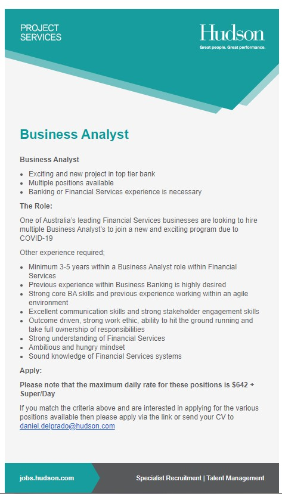

Job Advertisement: Business Analyst: Seek Business Analyst

The position advertised seeks an experience business analyst to ensure all requirements are met prior to a large application integration. This job appeals to me as I had to do an assignment in year 12 where I went into a finance focussed business and analysed the efficiency of their current system and made suggestions on how to improve it.
This position requires applicants to have previously worked as a business analyst within a banking or financial services setting, to have a holistic knowledge of how to analyse business processes, to have experience in an agile environment, have a strong understanding of financial services, and how the systems used within financial services are used.
Currently I have very little skills relating to the ones required in this application. I would say that I have a small knowledge of what an agile environment it and that I have a small knowledge of the business processes and suggesting improvements and problem solving.